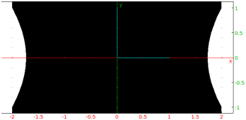
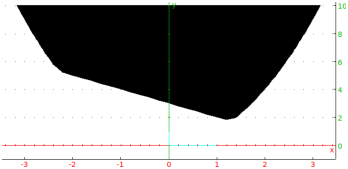
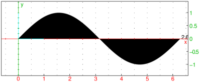
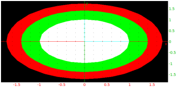
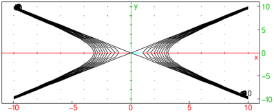
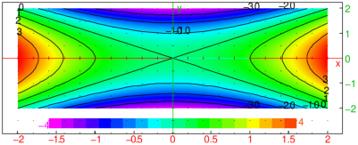
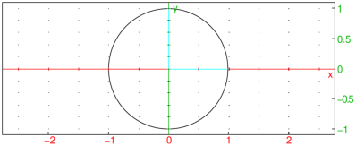

17.10.3 Animation of a sequence of graphic objects
The animation
command creates animations using sequences of graphic objects, which can be graphs
(see Section 17.2) or not (see chapters 24
and 25).
The sequence of objects depends most of the time on a parameter and is
defined using the seq command but it is not mandatory.
To define a sequence of graphic objects with seq, enter the definition
of the graphic object (depending on the parameter), the parameter
name, its minimum value, its maximum value maximum and optionally a
step value.
-
animation takes:
-
objs, a sequence of graphic objects.
- animation(objs)
draws an animation consisting of the sequence of objects.
Examples
In each example below, only the first frame of the resulting animation is shown.
| animation(seq(plotfunc(cos(a*x),x),a,0,10)) |
| animation(seq(plotfunc(cos(a*x),x),a,0,10,0.5)) |
or:
| animation(seq(plotfunc(cos(a*x),x),a=0..10,0.5)) |

| animation(seq(plotfunc([cos(a*x),sin(a*x)],x=0..2*pi/a), a,1,10)) |

| animation(seq(plotparam([cos(a*t),sin(a*t)],t=0..2*pi),a,1,10)) |

| animation(seq(plotparam([sin(t),sin(a*t)],t,0,2*pi,tstep=0.01),a,1,10)) |
| animation(seq(plotpolar(1-a*0.01*t^2, t,0,5*pi,tstep=0.01),a,1,10)) |
| plotfield(sin(x*y),[x,y]);
animation(seq(plotode(sin(x*y),[x,y],[0,a]),a,-4,4,0.5)) |

| animation(seq(display(square(0,1+i*a),filled),a,-5,5)) |

| animation(seq(line([0,0,0],[1,1,a]),a,-5,5)) |
| animation(seq(plotfunc(x^2-y^a,[x,y]),a=1..3)) |

| animation(seq(plotfunc((x+i*y)^a,[x,y],display=filled),a=1..10) |

Remark.
You can also define the sequence with a program.
For example if you want to draw the segments of length 1,√2…√20 constructed with a right triangle of side 1 and the
previous segment (note that there is a c:=evalf(..) statement
to force approximate evaluation otherwise the computing time would be too
long):
| seg(n):={
local a,b,c,j,aa,bb,L;
a:=1;
b:=1;
L:=[point(1)];
for (j:=1;j<=n;j++) {
L:=append(L,point(a+i*b));
c:=evalf(sqrt(a^2+b^2));
aa:=a;
bb:=b;
a:=aa-bb/c;
b:=bb+aa/c;
}
return L;
}:; |
then:
| L:=seg(20); s:=segment(0,L[k])$(k=0..20) |
then:
The output is an animation displaying the segments one at a time,
beginning with: